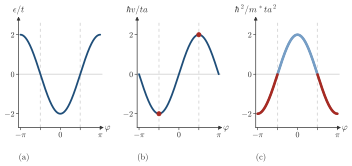
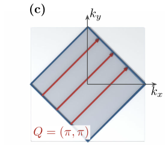
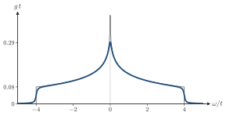
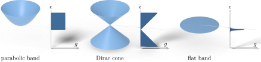

Page 8 of 11 of this session
2.9 Properties of an electronic dispersion
Once we have a band \(E(\mathbf{k})\), what else can we read from it? We will now see four quantities that come from the band, the density of states, the group velocity, the effective mass and the Fermi surface, which also needs the filling. In Section 2.10 we arrive at the three local types of a band, parabolic, Dirac and flat, which differ by their density of states.
\[H = -t\sum_\varphi \left(e^{i\varphi}+e^{-i\varphi}\right)\Psi_\varphi^\dagger\Psi_\varphi = \sum_\varphi \epsilon_\varphi\, \Psi_\varphi^\dagger\Psi_\varphi, \qquad \boxed{\epsilon_\varphi = -2t\cos\varphi}. \tag{2.8}\]
\[\epsilon(\varphi_x,\varphi_y) = -2t\left(\cos\varphi_x + \cos\varphi_y\right). \tag{2.14}\]
These are the bands of the chain of Section 2.5 and of the square lattice of Section 2.8, with the hopping \(-t\) between first neighbors and \(t>0\). The phases are \(\varphi=ka\), the crystal momentum times the lattice constant \(a\), one for each direction.
Once we have a dispersion \(E(\mathbf{k})\), from (2.8), (2.13), (2.14) or from a more complicated model, several quantities that we derive from it have a direct physical meaning. The first of them is the density of states, which counts how many states there are at the energy \(\omega\).
The density of states of a band \(E(\mathbf{k})\) in \(d\) dimensions is
\[g(\omega) = \int_{\text{BZ}} \frac{d^dk}{(2\pi)^d}\; \delta\!\left(\omega-E(\mathbf{k})\right). \tag{2.16}\]
It counts the states per unit of energy and per unit length, area or volume, for one band and one spin. The group velocity (2.17) and the effective mass (2.18) below are the slope and the curvature of the same band.
The density of states controls how strongly a material responds to interactions. A large or divergent density of states means that even a weak interaction can drive an instability toward magnetism, a charge density wave or superconductivity, which are the three cases of Session 1. In Session 6 and in Session 9 its value at the Fermi level is written \(D(E_F)\), and in Section 6.6 it gives the Stoner criterion for magnetism. A vanishing density of states means that a weak interaction can hardly have any effect, and only an interaction above a finite strength can drive such an instability.
The group velocity,
\[v(\mathbf{k}) = \frac{1}{\hbar}\nabla_{\mathbf{k}} E(\mathbf{k}), \tag{2.17}\]
is the local slope of the dispersion. Where \(v(\mathbf{k})=0\), electrons at that \(\mathbf{k}\) do not move in practice. Where \(v(\mathbf{k})\) is large, they propagate quickly through the lattice.
The effective mass,
\[\left(\frac{1}{m^\ast}\right)_{ij} = \frac{1}{\hbar^2}\, \frac{\partial^2 E(\mathbf{k})}{\partial k_i\,\partial k_j}, \tag{2.18}\]
is the curvature of the dispersion. For an isotropic parabolic band it is also the mass that is measured in transport and cyclotron-resonance experiments, since the bare electron mass cannot be observed directly inside a solid. For an anisotropic parabolic band, with the masses \(m_1\) and \(m_2\) along its two main axes, transport along one axis measures the mass of that axis, and cyclotron resonance measures \(\sqrt{m_1m_2}\). Depending on the band, \(m^\ast\) can go from nearly zero to very large values. For a Dirac dispersion, as we will see in Section 2.11, it is formally not defined at the point where the bands touch.
For the chain band of (2.8) we can draw the three quantities one next to the other, in Schematic 2.10. The size of the velocity is largest in the middle of the band, where the effective mass changes sign.

g3_chain_velocity_mass.py
Finally, the Fermi surface is the set of \(\mathbf{k}\)-points that have the same energy as the highest occupied state. Its shape controls which electronic instabilities are favoured and how a material responds to an external magnetic field, and it is one of the quantities that ARPES (Section 2.12) can map directly.
For the square lattice of (2.14) at half filling the Fermi surface is the square \(|\varphi_x|+|\varphi_y|=\pi\). Its flat pieces map onto each other when we shift them by \(Q=(\pi,\pi)\), which is called nesting, and the figure below shows it. In Section 9.4b we will see that nesting makes the response of the metal diverge. In the chain the same role is played by the two Fermi points, which are \(2k_F=\pi\) apart at half filling.

Half filling, at zero energy, is also where the density of states of the square lattice has its peak, as Schematic 2.11 shows. The corners of the square Fermi surface are the points \(X=(\pi,0)\) and \((0,\pi)\), which are saddle points of the band. There the velocity (2.17) vanishes, as it also does at \(\Gamma\) and \(M\). What makes \(X\) different is that the band curves up along one direction and down along the other. So the energy stays close to zero along the two lines that cross at \(X\), and a whole region around \(X\) has nearly the same energy.

g3_square_dos.py
For the band \(\epsilon_\varphi=-2t\cos\varphi\), where is the size of the group velocity largest?
Show the answers
- A. ✗ False
This is false. The velocity is proportional to \(2t\sin\varphi\), which is zero at \(\varphi=0\). The bottom of the band is flat, and the electron there is at rest.
- B. ✓ True
This is true. The velocity is the slope of the band, which is proportional to \(2t\sin\varphi\). It vanishes at the band edges and its size is largest in the middle of the band.
- C. ✗ False
This is false. A constant velocity needs a linear band, such as a Dirac cone. For the cosine band the slope is \(0\) at \(\varphi=0\) and \(2t\) at \(\varphi=\pi/2\), in units of the lattice constant over \(\hbar\).
The velocity is zero at the extrema of the band, and its size is largest where the band crosses the middle.
Close to its bottom, the chain band \(-2t\cos(ka)\) is
\[\epsilon(k) \approx -2t + ta^2k^2.\]
What is its effective mass \(m^\ast\)?
Show the answers
- A. ✓ True
This is true. The curvature is \(\partial^2\epsilon/\partial k^2=2ta^2\), and the inverse mass is the curvature divided by \(\hbar^2\), so \(1/m^\ast=2ta^2/\hbar^2\). Close to the bottom it is the band of a free electron, \(\hbar^2k^2/2m^\ast\), shifted by \(-2t\), with \(\hbar^2/2m^\ast=ta^2\).
- B. ✗ False
This is false. Take \(t=a=\hbar=1\). The band is \(-2+k^2\), with the curvature \(2\), so \(1/m^\ast=2\) and \(m^\ast=1/2\), and not \(1\). The factor \(2\) comes from the second derivative of \(k^2\).
- C. ✗ False
This is false. A negative mass belongs to the top of the band, where it is \(2t-ta^2\delta^2\) with \(\delta\) the distance from \(k=\pi/a\). At the bottom the curvature \(2ta^2\) is positive, so the mass is positive.
A wider band, with a larger \(t\), has a smaller effective mass, since the mass goes as \(1/t\).
The square lattice has the band
\[\epsilon(\varphi_x,\varphi_y) = -2t\left(\cos\varphi_x + \cos\varphi_y\right).\]
Each map shows its Fermi surface at one energy, as dark lines over the zone. The dashed square is the first zone. A Fermi surface is perfectly nested when the shift by \(\mathbf Q=(\pi,\pi)\) maps it onto itself. Which one is perfectly nested?
Show the answers
- A. ✗ False
This is false. This is the surface at \(\epsilon=-3t\), a small circle around \(\Gamma\). Since \(\epsilon(\mathbf k+\mathbf Q)=-\epsilon(\mathbf k)\), the shift by \(\mathbf Q\) takes it to the contour at \(+3t\), a circle around \(M=(\pi,\pi)\), which has no point in common with it.
- B. ✗ False
This is false. This is the surface at \(\epsilon=-t\). The shift by \(\mathbf Q\) takes it to the contour at \(+t\), since \(\epsilon(\mathbf k+\mathbf Q)=-\epsilon(\mathbf k)\). For example, the point \((2\pi/3,0)\) is on the surface, and the shifted point \((5\pi/3,\pi)\) has the energy \(+t\).
- C. ✓ True
This is true. This is the surface at \(\epsilon=0\), which is half filling, the square \(|\varphi_x|+|\varphi_y|=\pi\). Since \(\epsilon(\mathbf k+\mathbf Q)=-\epsilon(\mathbf k)\), the shift by \(\mathbf Q\) maps the line \(\epsilon=0\) onto itself, and each flat side lands on the opposite side.
Perfect nesting makes the response of the metal diverge. For the square lattice the shift by \(\mathbf Q\) nests the Fermi surface perfectly only at \(\epsilon=0\).
Compute the density of states (2.16) of the chain band \(\epsilon_\varphi=-2t\cos\varphi\), per site, with \(a=1\) so that \(\varphi=k\). Where does it diverge, and what is its value in the middle of the band?
Solution
For an energy \(\omega\) between \(-2t\) and \(2t\) there are two phases in the zone with \(-2t\cos\varphi=\omega\), which are \(\pm\varphi_0\). Close to each of them the delta function of (2.16) gives \(\delta(\varphi\mp\varphi_0)/|\partial_\varphi\epsilon|\), with the same slope \(|\partial_\varphi\epsilon|=2t\sin\varphi_0\) at both. So
\[g(\omega)=\frac{1}{2\pi}\,\frac{2}{2t\sin\varphi_0}=\frac{1}{\pi\sqrt{4t^2-\omega^2}},\]
where we used \(2t\sin\varphi_0=\sqrt{4t^2-\omega^2}\), since \(2t\cos\varphi_0=-\omega\). Its integral from \(-2t\) to \(2t\) is \(1\), which is one state per site. In the middle of the band it is \(g(0)=1/2\pi t\approx0.16/t\). At the band edges \(\omega\to\pm2t\) it diverges as an inverse square root, since there the velocity \(2t\sin\varphi_0\) vanishes and many phases have nearly the same energy.
So in one dimension a band edge is where the density of states is largest. A Fermi level close to it is where a weak interaction has the largest effect, as we said above for a large density of states.
Notebook check-in: session2.ipynb, “Density of states of the honeycomb lattice” (Core), and “Fermi surface of the honeycomb lattice” (Challenge)
Once you have the honeycomb dispersion of Section 2.11, these two sections compute (2.16) and the Fermi surface directly. Look at how both change when the Fermi level is tuned through the Dirac point.
Try it. Run the cell and find the V shape at zero energy and the two sharp peaks. Uncomment the triangular lattice and check that the dip at zero energy is gone.
2.10 Three types of dispersion, which are parabolic, Dirac and flat
Real dispersions are complicated functions of \(\mathbf{k}\), but almost every band structure in this course is built locally from three limiting types.
Parabolic bands, \(E\propto k^2\), which is the case similar to free electrons, describe most semiconductors and conventional metals. They appear essentially from a Taylor expansion near any extremum of a band. We already saw this explicitly near \(\varphi=0\) and \(\varphi=\pi\) in (2.8), with effective masses of opposite sign at the two extrema.
Dirac (linear) dispersions, \(E\propto|k|\), are realized in graphene and in several topological materials, such as quantum spin Hall insulators, Chern insulators and other symmetry-protected topological phases. They have finite topological invariants, in the form of a Berry phase, and they give rise to a phenomenology that is similar to relativistic physics, even though the electrons themselves are not relativistic at all.
Flat bands, \(E(\mathbf{k})=\text{const}\), may look like the least interesting case, but by (2.16) a flat band gives a divergent density of states. As a result, even weak interactions have a very large effect when a flat band is near the Fermi level. The flatness can have a nontrivial origin, which is destructive interference in real space and not a hopping set to zero. Then the flat band can also have a finite Chern number, which is central to the quantum Hall effect of Session 4 and to moiré materials.
In two dimensions, per unit area and for one spin, the three types give three different densities of states,
\[\begin{aligned} g(E) &= \frac{m^\ast}{2\pi\hbar^2} && \text{a parabolic band } E=\frac{\hbar^2k^2}{2m^\ast}, \text{ for } E>0,\\[8pt] g(E) &= \frac{|E|}{2\pi\hbar^2v_F^2} && \text{one Dirac cone } E=\pm\hbar v_F|\mathbf k|,\\[8pt] g(E) &= \frac{\delta(E-E_0)}{A_c} && \text{one flat band at the energy } E_0, \end{aligned}\]
with \(A_c\) the area of the unit cell. So the density of states is constant for a parabolic band, it vanishes linearly at the tip of a Dirac cone, and it diverges for a flat band.
The steps From the density of states (2.16) to the three types
Let us start with one dimension. The delta function of (2.16) picks the momenta where \(E(k)=\omega\), and each of them gives \(1/(2\pi|\partial_kE|)\). For the chain (2.8) with \(a=1\) there are two such momenta, and
\[g(\omega) = \frac{1}{\pi\sqrt{4t^2-\omega^2}}\]
per site, which diverges at the band edges, where the velocity vanishes.
In two dimensions we take a band that depends only on \(k=|\mathbf k|\) and that grows with \(k\). The states with an energy below \(E\) fill a disk of radius \(k\), which holds \(\pi k^2/(2\pi)^2\) states per unit area, so
\[g(E) = \frac{d}{dE}\,\frac{k^2}{4\pi} = \frac{1}{2\pi}\,k\,\frac{dk}{dE}.\]
For the parabolic band \(E=\hbar^2k^2/2m^\ast\) we have \(k\,dk=m^\ast dE/\hbar^2\), so \(g=m^\ast/2\pi\hbar^2\), which does not depend on \(E\). For the upper half of one Dirac cone, \(E=\hbar v_Fk\), we have \(k=E/\hbar v_F\) and \(dk/dE=1/\hbar v_F\), so \(g=E/2\pi\hbar^2v_F^2\). The lower half, \(E=-\hbar v_Fk\), decreases with \(k\), so there the disk of radius \(k\) holds the states above \(E\). We count these instead, and this gives the same with \(|E|\). For a flat band every momentum has the energy \(E_0\), so the delta function comes out of the integral, and the integral of \(d^2k/(2\pi)^2\) over the zone is \(1/A_c\), one state per unit cell.
The same count in one dimension gives \(g=(1/\pi)\,dk/dE\), which diverges as \(1/\sqrt{E}\) at the bottom of a parabolic band. So the dimension and the dispersion together fix the density of states. Of these three types, in two dimensions only the flat band makes it diverge. A saddle point of a band, such as \(X\) of the square lattice, gives a weaker divergence, a logarithmic one, which is the peak at zero energy in Schematic 2.11.
Figure 2.4 shows the three types next to each other, together with the density of states of each one, which decides whether interactions can have an effect on them.

Next we derive the Dirac case explicitly, since it is the defining feature of graphene and the direct link to the topology of Session 3. Then we look at two lattices that realize flat bands. We compute such dispersions with pyqula, which we named in Section 2.5, and with its graphical interface Quantum Lattice, which needs no scripting.
A two-dimensional Dirac cone has \(E=\hbar v_F|\mathbf q|\). How does the density of states behave close to the tip?
Show the answers
- A. ✗ False
This is false. A constant density of states in two dimensions belongs to a parabolic band \(E=\hbar^2q^2/2m\), where \(q\,dq=m\,dE/\hbar^2\). For the cone \(q\,dq\propto E\,dE\), so the density depends on \(E\).
- B. ✓ True
This is true. In two dimensions the number of states in a ring of radius \(q\) grows as \(q\,dq\). With \(E\propto q\) this gives a density of states proportional to \(|E|\), which vanishes at the tip.
- C. ✗ False
This is false. The divergence \(1/\sqrt{E}\) is the band edge of a one-dimensional parabolic band. In the two-dimensional cone the density goes to zero at the tip and does not diverge.
The density of states depends on both the dimension and the dispersion.
- The density of states at the Fermi level decides the Stoner criterion (6.3) of Section 6.6, where it is written \(D(E_F)\).
- The nesting of the square Fermi surface makes the Lindhard function diverge in Section 9.4b.
- Flat bands with a Chern number are the Landau levels of Section 4.4 and the moiré flat bands of Section 4.20.
- The Dirac dispersion with a mass term gives the Chern insulator of Section 3.10.